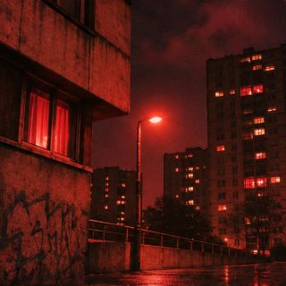
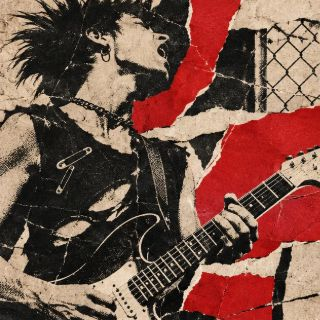
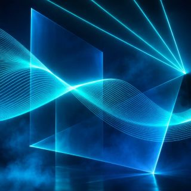
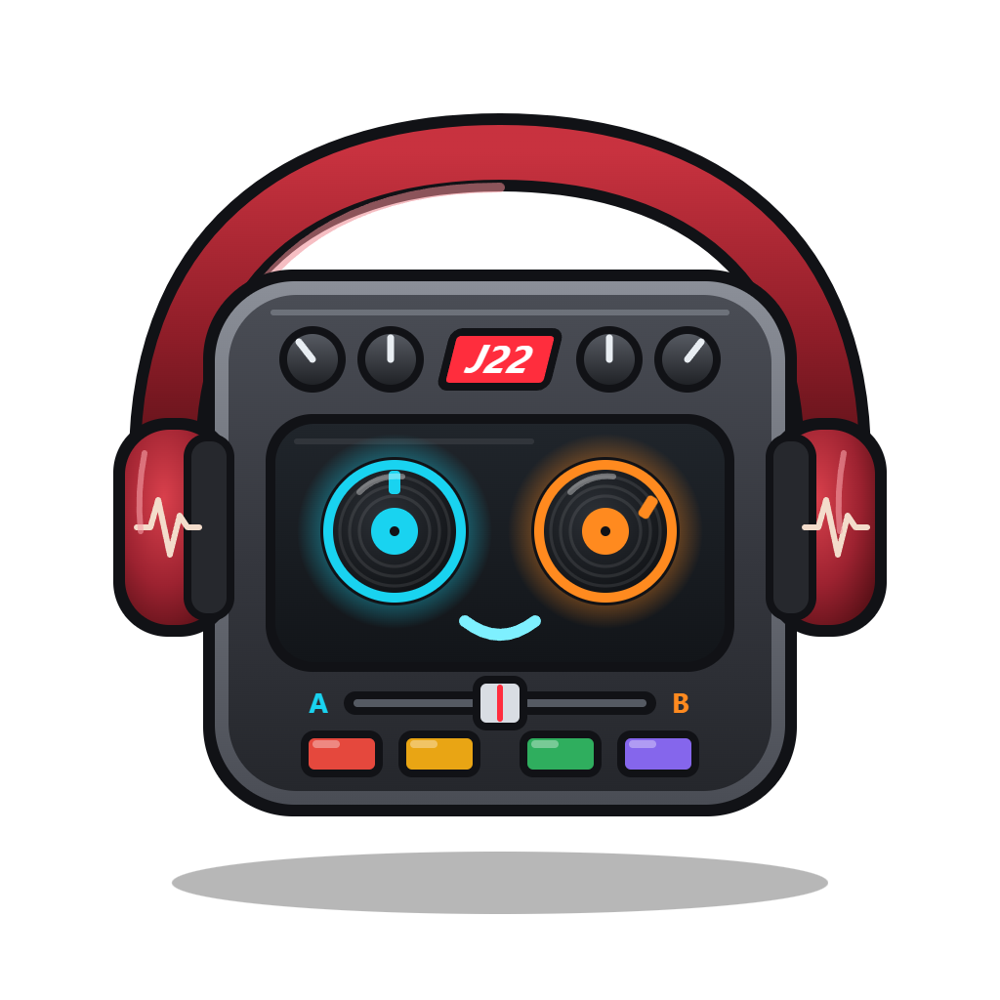
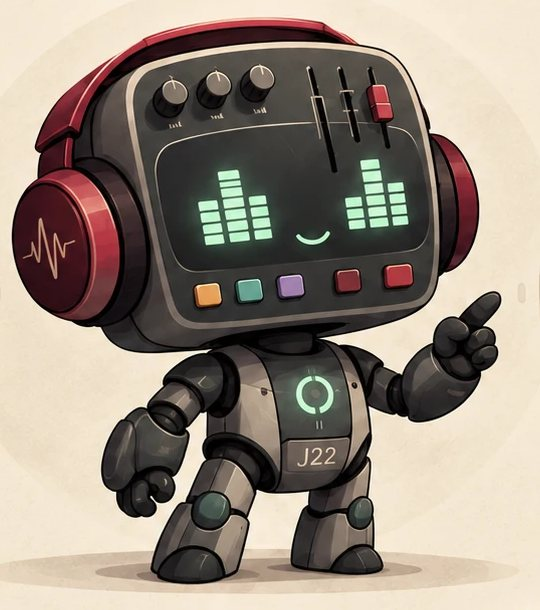

J-DJ / TABLE DE MIXAGE
Amateur aujourd’hui.
Aux platines ce soir.
Pas besoin d’être pro. Juste l’envie de mixer.
Tu aimes la musique, tu n’as jamais touché une platine ? C’est parfait : J-DJ est fait pour toi. Charge deux morceaux, appuie sur « Synchroniser », glisse le crossfader. Ta première transition, c’est maintenant.
Club Graphite · fonctionne dans le navigateur, même sans Internet
Prototype en développement, sans compte J-DJ.
ÉTAPE 1 · ESSAIE
Pas besoin d’être DJ pro.
Mixe ton son.
Pas besoin de tout connaître pour faire une première transition. Charge deux titres, écoute comment ils se répondent, glisse le crossfader. Essaie, recommence, trouve ton style.
Clique sur SYNC : B se cale sur A.
Cale les tempos.
J-DJ détecte le BPM de tes morceaux. Appuie sur « Synchroniser » et les temps des deux platines tombent ensemble.
Attrape le disque et fais-le tourner.
Fais tourner le disque.
Passe en mode scratch : le plateau tient le disque. Bouge-le pour scratcher, relâche pour repartir. Pose tes repères rapides pour sauter au bon moment.
Glisse le crossfader, touche un pad.
Enregistre ton set.
Lance l’enregistrement, enchaîne tes titres, ajoute un effet ou un son du sampler. Télécharge ton mix en WAV ou en MP3 pour l’écouter et le partager.
Platine A. Platine B. Ton mix.
Ouvrir la console Club Graphite ↗ÉTAPE 2 · CHOISIS TES SONS
Nos sons t’attendent.

90 BPMBéton de nuit
Le beat lourd pour ouvrir ton set.

176 BPMÉpingle rouge
Guitares saturées et énergie brute.

126 BPMFaisceau bleu
Les lasers pour faire monter la salle.
Et Satin minuit, la démo R&B, t’attend dans la bibliothèque. Ajoute aussi tes propres morceaux : pop, rock, rap, électro, tout se mixe.
Étape suivante · 3Découvre ta cabine↓ÉTAPE 3 · DÉCOUVRE TA CABINE
Voici ta
cabine.
Des images de la console pour te repérer avant de commencer. Deux platines, un mixeur, ta bibliothèque : avance à ton rythme.
Capture de la console Club Graphite avec les démos intégrées.
Étape suivante · 4Trouve ton style↓ÉTAPE 4 · TROUVE TON STYLE
Jamais touché une platine ?
Commence ici.

Le mix s’apprend en mixant. Tu n’as pas besoin de connaître tout le vocabulaire des DJ pour réussir ta première transition. Choisis ce qui te donne envie aujourd’hui.
D’un titre
à l’autre.
Charge les démos, appuie sur « Synchroniser » et glisse le crossfader. Ta première transition en quelques secondes.
Découvrir les platines ↗02 / JE VEUX SCRATCHERLe disque.
Tes doigts. Toi.
Passe en mode scratch, pose tes repères rapides et joue avec les boucles. Un casque t’aidera à préparer la platine suivante.
Découvrir le scratch ↗03 / J’AI DÉJÀ MES MORCEAUXDe ton dossier
à la platine.
Ajoute tes MP3 ou WAV dans la bibliothèque, range-les par genre et envoie-les sur A ou sur B d’un clic.
Découvrir la bibliothèque ↗ÉTAPE 5 · APPRENDS LES GESTES
De la platine au mix.
Garde le groove.
Tu veux enchaîner, scratcher ou préparer un set complet ? Découvre ce que tu peux faire à chaque étape, puis lance-toi à ta manière.
Le tempo,
c’est toi.
J-DJ analyse chaque morceau importé : BPM, grille et premier temps.
- BPM détecté automatiquement
- Synchronisation des deux platines
- Tap Tempo et repère manuel
ÉTAPE 6 · TROUVE TA SIGNATURE
Le bon enchaînement.
Ta signature.
Une entrée plus douce. Une basse coupée au bon moment. Un écho qui relance la salle. Explore le filtre, l’égaliseur, les effets et le sampler pour façonner ton set, une transition après l’autre.
ÉTAPE 7 · TON PREMIER SET
Deux titres.
Une transition.
Un début qui compte.
Voici un exemple de parcours pour te lancer. Ce n’est pas une recette imposée : ton set peut prendre une autre direction.
Je me lance ↗- 01
Choisis tes deux titres.
Sur A, celui qui ouvre ton set. Sur B, celui que tu veux faire entrer. Les démos intégrées suffisent pour commencer.
- 02
Cale les tempos.
Appuie sur « Synchroniser ». Si la grille est incertaine, corrige le BPM à la main ou avec le Tap Tempo.
- 03
Trouve ton point d’entrée.
Repère la fin d’une phrase musicale, prépare B au casque, puis glisse le crossfader de A vers B.
- 04
Garde ton mix.
Enregistre ta transition et télécharge-la en WAV ou en MP3 pour la réécouter et la partager.
ÉTAPE 8 · LANCE-TOI
Tes titres attendent.
Pas besoin d’attendre.
Ouvre la console dans ton navigateur ou télécharge-la. Essaie une transition, un scratch, un coup de sirène : ton premier objectif peut rester simple. L’important, c’est de commencer.
Ta cabine.
À emporter.
Un seul fichier à ouvrir dans ton navigateur, qui fonctionne même sans Internet. J-DJ est encore en développement : essaie-le sur ton équipement et garde tes fichiers audio d’origine.
Télécharger J-DJ ↓Ou ouvrir la console dans le navigateur ↗Windows / Edge privilégiés · Gratuit · Pas de compte J-DJ
Comment l’ouvrir ? +
- Télécharge le fichier J-DJ-CLUB-GRAPHITE.html.
- Double-clique dessus : il s’ouvre dans ton navigateur.
- Clique sur « Premiers pas » pour charger les démos et faire ta première transition.
L’ouverture par double-clic dans Edge et l’écoute sur ton matériel restent à vérifier.
L’UNIVERS J-DJ
Le bot J-DJ,
aux platines.
Casque sur les oreilles, une main sur le plateau, l’autre sur le mixeur : le bot J-DJ n’a pas commencé pro non plus. Il t’accompagne de ta première transition à ton premier set.
Ouvrir la console ↗

JACKBOT · CHEZ JACK22 STUDIO ↗DE LA MÊME FAMILLE
Jackbot,
en cabine.
Le petit ingénieur du son de JACK22 STUDIO passe derrière les platines du Club Graphite. Compose ton morceau chez JACK22, puis viens le mixer ici.
J-DJ · NOTRE UNIVERS
Une cabine.
Tous tes sons.
Enchaîner deux titres, poser un scratch, relancer avec une sirène : chaque envie a sa place. Le Club Graphite accompagne ton mix, du premier son au dernier fondu.
AVANT DE TE LANCER
On répond
simplement.
Est-ce que J-DJ est gratuit ? +
Oui, la console proposée ici est gratuite. Aucune boutique ni offre payante n’est ouverte sur cette page.
Où vont mes morceaux ? +
Tes morceaux restent sur ton ordinateur : J-DJ les lit dans ton navigateur sans les envoyer sur Internet. La bibliothèque de session se vide à la fermeture, mais les repères et réglages de chaque morceau sont mémorisés.
Ça marche sans Internet ? +
Oui. La console tient dans un seul fichier, avec ses polices, ses démos et son encodeur MP3. Une fois téléchargée, elle n’a plus besoin du réseau.
Je peux brancher un contrôleur ? +
J-DJ se pilote au clavier, et les pads du sampler peuvent être affectés au MIDI. La compatibilité avec ton contrôleur reste à vérifier sur ton matériel.
Est-ce un logiciel terminé ? +
J-DJ est un prototype fonctionnel en développement. Ses fonctions ont été testées automatiquement dans un navigateur Chromium. Cela ne remplace pas une vraie écoute ni des essais sur ton ordinateur.